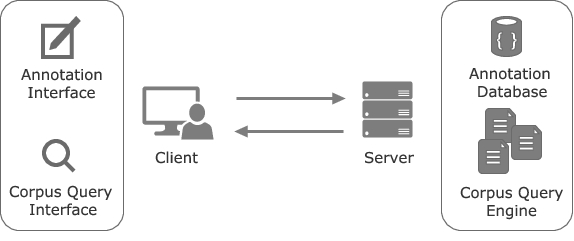
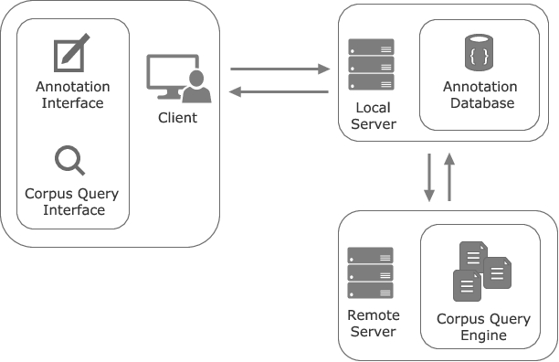

From language community to individual and from individual researcher to team-based research
Peter Petré & Enrique Manjavacas
17/06/2016
From individual researcher to team-based research
Annotation-based Corpus Linguistics
- Corpus Query
- Hits
- Filter False Positives
- Add linguistic annotation
- Quantitative Analysis
Problems
- Linkage problem
- Synchronization problem
Linkage problem
Typical workflow


Consequences
- Spread of non-reusable data
Synchronization problem
Two types of synchronization problems:
- Intrinsic: related to the linguistic annotation process itself
- Extrinsic: related to software synchronization challenges
Intrinsic
Unifying annotation schemes and their usage.
- Modification (introduction, removal or change) of labels.
- Interpretational disagreements: spotting & correcting.
Extrinsic
Fundamental problem of collaborative software/distributed systems.
“How to ensure that dispersed users are able to modify a shared body of documents without overwriting each other’s changes”
Application-based approach
- Bring modern web-app features to a corpus-query/annotation interface.
- Encompass Corpus Query Engine + Annotation Interface
- Enable synchronized real-time annotation of corpus material.
Architecture

Web-based Client
- Real-time feedback client-to-client following a Pub/Sub architecture.
- Subscribers are assigned roles with different permissions. (control access to resources)
- Conflicts are explicitely resolved and documented. (WIP)
Annotation Database
- Support for Token & Span annotations (see also RelANNIS, Ziggurat).
- Version controlled. Each annotation has a revision history.
Added advantages
- Structured annotation data:
- What parts and to what extent can linguistic annotation be automated.
- Incremental reindexing of the corpus + annotations.
- Reciprocal supervision (Am I using the categories as my peers do?)
- Decoupling of front-end and query-engine (swap engines).
Decoupling of Front-end and Query-engine
